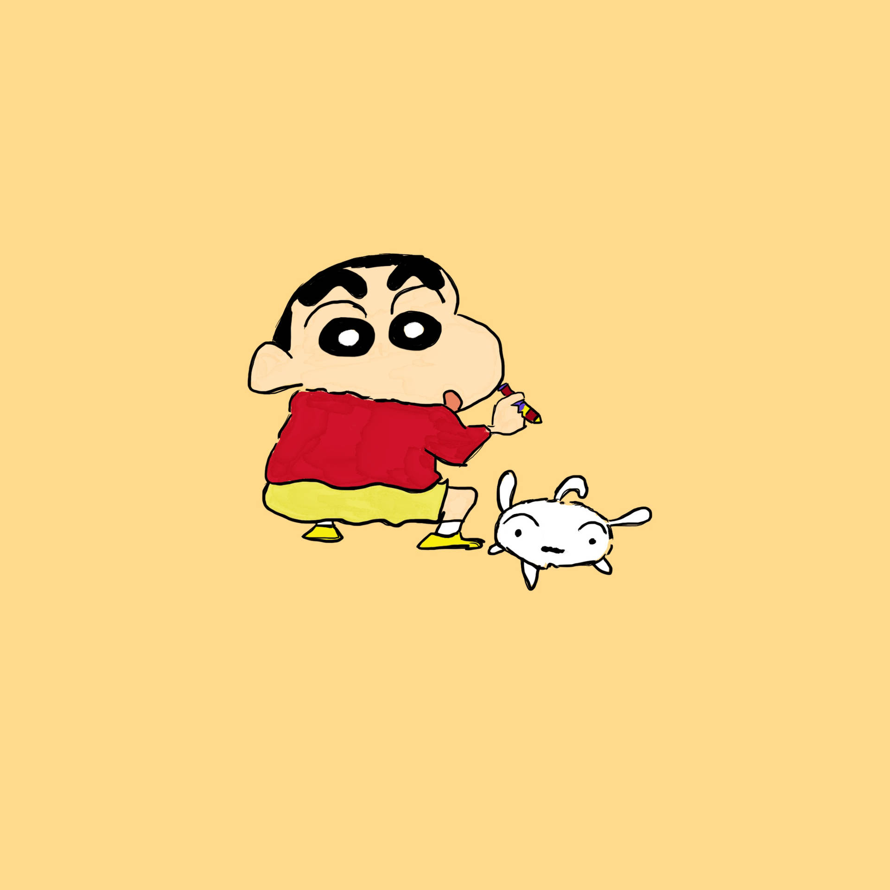
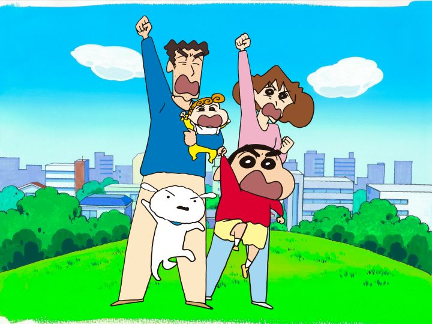
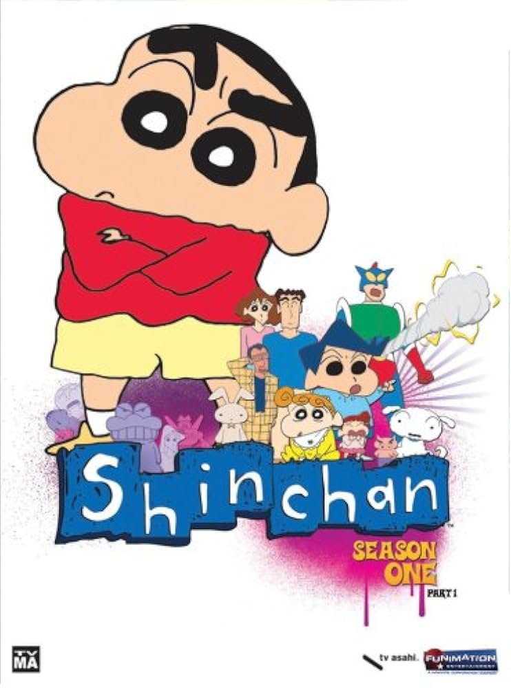

Nuestra página web

Esta página está pensada para todos los fans de Shin Chan que quieren ver la serie sin complicarse. Aquí encontrarás enlaces a diferentes sitios donde puedes ver capítulos y películas de Shin Chan, todo reunido en un mismo lugar para que no tengas que perder tiempo buscando. Solo tienes que elegir el enlace que más te convenga y empezar a disfrutar de las locas aventuras de Shin Chan y su familia. ¡Fácil, rápido y directo!
Introducción a Shin Chan
Shin Chan, cuyo título original es Crayon Shin-chan, es una popular serie de animación japonesa creada por Yoshito Usui en 1992. Desde su estreno, la serie se ha convertido en un fenómeno cultural tanto en Japón como en muchos otros países, destacando por su humor irreverente, su estilo desenfadado y su capacidad para retratar la vida cotidiana desde una perspectiva poco convencional. Aunque en apariencia está dirigida a un público infantil, su contenido está cargado de sátira y referencias que suelen ser comprendidas mejor por adolescentes y adultos. El protagonista de la serie es Shinnosuke Nohara, un niño de cinco años travieso, descarado y extremadamente sincero. Shin Chan se caracteriza por su falta de filtro al hablar, sus comentarios inapropiados y su comportamiento excéntrico, lo que provoca situaciones cómicas y, en muchos casos, incómodas para los adultos que lo rodean. A pesar de su conducta problemática, Shin Chan también muestra momentos de inocencia y bondad que revelan que, en el fondo, sigue siendo solo un niño curioso que explora el mundo a su manera.La familia Nohara juega un papel fundamental en la serie. Hiroshi, el padre, es un oficinista común que representa al típico trabajador japonés de clase media, con preocupaciones laborales, económicas y familiares. Misae, la madre, es una ama de casa temperamental que constantemente lucha por mantener el orden en el hogar mientras lidia con las travesuras de su hijo. Ambos personajes aportan un retrato realista y humorístico de la vida familiar, exagerando situaciones cotidianas para generar comedia. También está Himawari, la hermana menor de Shin Chan, una bebé que, a pesar de su corta edad, ya muestra una gran afición por los objetos brillantes y los chicos guapos, lo que añade otro nivel de humor a la serie. Uno de los aspectos más llamativos de Shin Chan es su estilo de humor, que rompe con los esquemas tradicionales de las series infantiles. La serie utiliza chistes visuales, juegos de palabras, situaciones absurdas y referencias a la cultura popular japonesa. En muchos países, esto ha generado polémica, ya que algunos consideran que el comportamiento de Shin Chan no es un buen ejemplo para los niños. Sin embargo, sus defensores argumentan que la serie no busca educar de manera directa, sino entretener y reflejar de forma exagerada la realidad social y familiar.
Introducción a Shin Chan

Además del humor, Shin Chan destaca por su crítica social. A través de situaciones aparentemente simples, la serie aborda temas como el estrés laboral, el consumismo, la educación, las normas sociales y la vida urbana. Todo esto se presenta de forma ligera y cómica, pero permite al espectador reflexionar sobre aspectos de la vida moderna. Este equilibrio entre comedia y crítica es una de las razones por las que la serie ha mantenido su popularidad durante décadas. Visualmente, la animación de Shin Chan es sencilla y deliberadamente poco sofisticada. Los diseños de los personajes son simples, con líneas básicas y expresiones exageradas, lo que refuerza el tono humorístico de la serie. Este estilo, lejos de ser una desventaja, se ha convertido en una de sus señas de identidad más reconocibles. En conclusión, Shin Chan es mucho más que una serie de dibujos animados provocadora. Es una obra que ha sabido combinar humor, sátira y realidad cotidiana de una manera única, conquistando a varias generaciones de espectadores. Su éxito radica en su capacidad para hacer reír mientras muestra, sin tapujos, las contradicciones y absurdos de la vida diaria. Por ello, Shin Chan sigue siendo una de las series de animación más influyentes y recordadas de todos los tiempos. Otro elemento fundamental que ha contribuido al éxito de Shin Chan es su galería de personajes secundarios, especialmente los amigos del protagonista. Entre ellos destacan Kazama, el niño responsable e inteligente que suele desesperarse con las ocurrencias de Shin Chan; Nene, aparentemente dulce pero con un carácter explosivo; Masao, tímido e inseguro; y Bo-chan, tranquilo y misterioso, conocido por su forma pausada de hablar. Cada uno de estos personajes representa distintos tipos de personalidad infantil, lo que permite crear situaciones muy variadas y divertidas. La interacción entre ellos refleja de manera exagerada, pero reconocible, las dinámicas sociales que se dan entre niños pequeños. La serie también dedica mucho tiempo a mostrar la vida escolar, especialmente la guardería a la que asiste Shin Chan. Los profesores, en particular la señorita Yoshinaga y el señor Encho, aportan humor desde la perspectiva adulta, mostrando el cansancio, la paciencia y, en ocasiones, la frustración que supone trabajar con niños. Estas escenas sirven para parodiar el sistema educativo y la relación entre alumnos y maestros, siempre desde un enfoque cómico y sin perder el tono ligero de la serie.
Enlaces a Shin Chan

Netflix - NETFLIX
Amazon Prime - PRIME VIDEO
Ani.ME – Shin-Chan - ANI.ME
AniNow – Ver Shin Chan online - ANINOW
Shin Chan Episodios en Español - YOUTUBE
{kind=link}